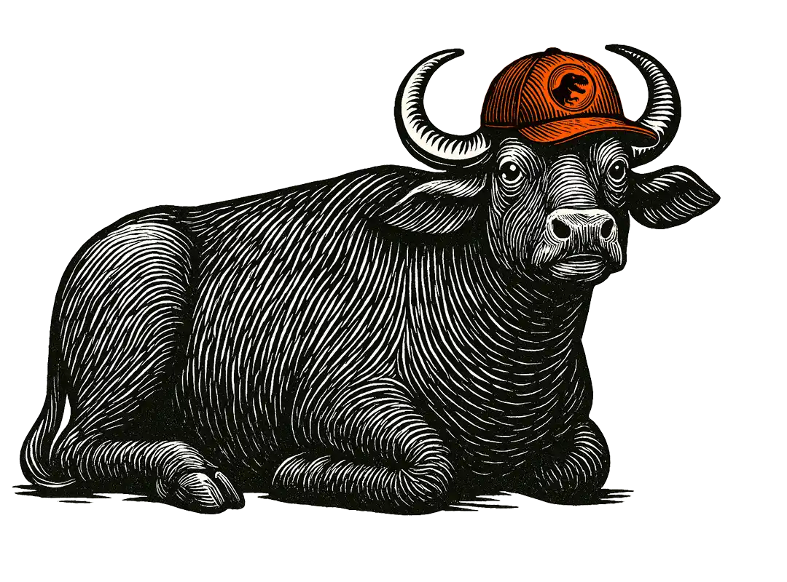

Dove il latte è diventato mozzarella.
Abbiamo creato la nostra azienda nel 1993, tutti parlavano di Jurassic Park, in radio suonava la canzone "Il coccodrillo come fa" diffusa dallo Zecchino d'Oro.
Scopri di piùUn sapore pieno, tondo, da mille anni.
Abbiamo creato la nostra azienda nel 1993, tutti parlavano di Jurassic Park, in radio suonava la canzone "Il coccodrillo come fa" diffusa dallo Zecchino d'Oro.
Scopri di piùIl nostro territorio è il posto della mozzarella, L'azienda Agricola Ponte Reale è situata in un'antichissima riserva di caccia borbonica, da sempre annoverata tra i luoghi più belli ed incontaminati dell'intero "Regno delle due Sicilie".
Scopri di piùLa grande scioglievolezza.
Si estende per una superficie di circa 1000 ettari, un luogo in cui la natura si esprime con tutta la sua grandezza.
Scopri di piùIl Fiordilatte che non sbaglia mai.
Nella smorfia, bufala, significa sincerità, e noi promettiamo sinceramente corna e benessere ai nostri animali.
Scopri di piùIl rispetto assoluto della filiera per noi non è una frase da inserire nella nostra presentazione, ma un vero e proprio comandamento.
Scopri di più Un sapore pieno, tondo, da mille anni.
Se è popolare, è anche democratica.